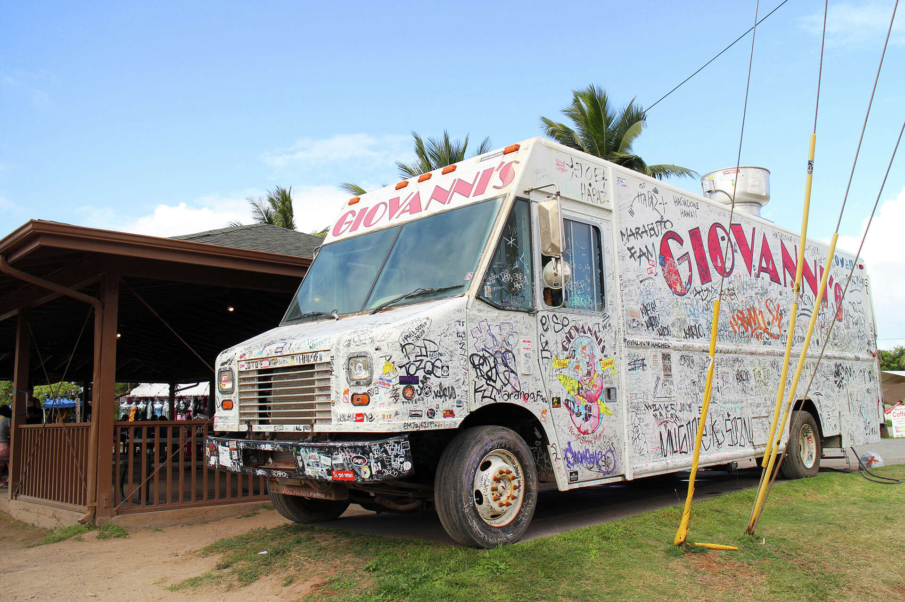

Giovanni's Shrimp Truck
Best for: backpackers and road-trippers
66-472 Kamehameha Hwy, Haleiwa, HIA graffiti-covered truck slinging garlic shrimp plates on the North Shore. Cash-friendly, huge portions, picnic-table seating — the no-fuss, high-reward stop on a circle-island drive.
View menu & hours →